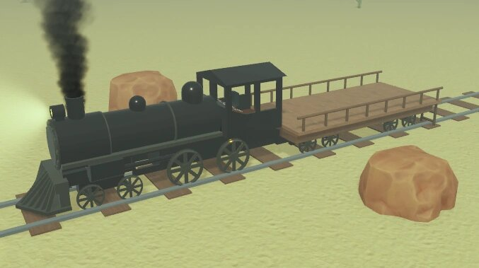

Види потягів в Dead Rails
У грі «Dead Rails» поїзд є головним аспектом, тому що на ньому можна їздити, возити речі та обладнати його.
Потяги:
Звичайний поїзд (Default Train)
Це стандартний поїзд, який буде у вашому розпорядженні на самому початку гри.

Його сильні сторони:
- Безкоштовний – видається за замовчуванням.
- Легко кастомізується.
- Дуже просто зміцнюється (залізними листами, колючим дротом тощо).
- Їде з нормальною швидкістю і не витрачає надто багато палива.
Слабкі сторони:
- Жодних бонусів.
- Вороги можуть залазити на платформу з усіх боків.
- Якщо стрибнути цим поїздом під час поїздки, можна випасти.
- Кабіна дуже маленька, туди влазять не більше двох-трьох гравців.
- А ще тут можна стріляти через вікна, що корисно як для вас, так і для ваших супротивників.
Вагон для худоби (Скотовоз, Cattle Car)
Цей варіант поїзда – з вагоном для худоби замість звичайної платформи. За 225 облігацій ви можете поставити закритий дерев'яний вагон із трьома входами, у тому числі люком на даху. Такий вагон легше захищати, але вороги все ж таки можуть його прострілювати.
Його сильні сторони:
- Вагон із дахом захищає від ударів блискавки під час грози та рятує вампірів від сонця.
- У вагоні міститься більше речей, адже можна приварювати предмети до стін та даху.
- Позаду вагона є стіна, завдяки чому з поїзда неможливо випадково випасти.
- Якщо граєте за клас Eggslinger (Яйцестріл, Яйцеклад), ваші яйця не вилітатимуть під час руху поїзда (хоча іноді можливі баги).
- Нижні входи можна заблокувати, і вороги не зможуть потрапити всередину, тоді як у гравців залишиться вхід на даху.
Слабкі сторони:
- Ворожий вогнепальник пробиває дерев'яні стіни.
- Поганий огляд нічого не видно, якщо не стоїш біля входу.